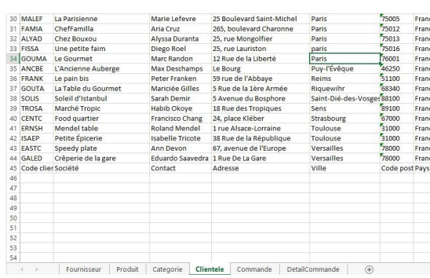
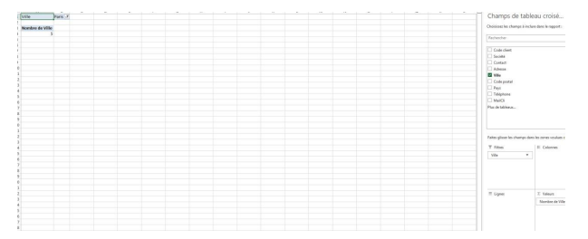
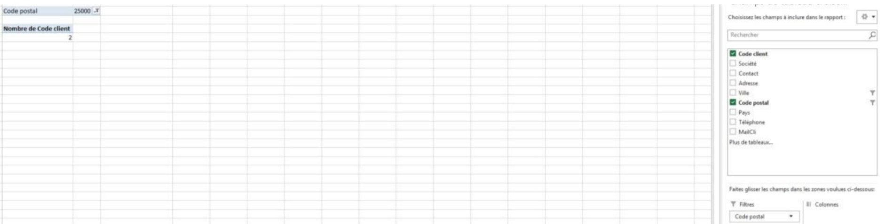
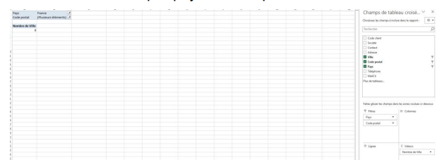
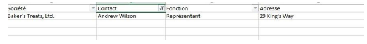
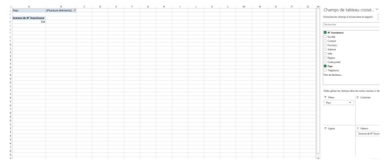
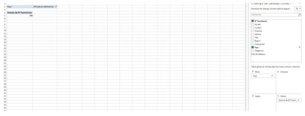
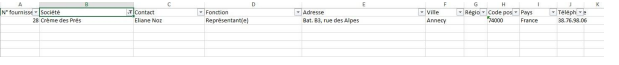

Tableau synthétique des tables et leurs rôles dans KDou
Question 2
2 a)
Il y a deux méthodes pour trouver le nombre de clients parisiens. En allant dans la feuille client, on fait un filtrage par ville comme ci-dessous :

5 clients venant de Paris
On voit qu’il y a 5 clients qui viennent de Paris.
Personnellement, j’ai trouvé une autre méthode en utilisant le TCD (Tableau croisé dynamique) qui est plus adapté :

Utilisation du TCD pour filtrer les clients parisiens
2 b)
J’ai utilisé la méthode du TCD pour savoir combien il y a de clients bisontins. J’ai fait un tri par code postal et affiché la valeur du nombre de codes clients. Il y en a 2, ce qui permet de filtrer par ville les clients qui viennent de Besançon :

2 c)
Pour savoir combien il y a de clients en Île-de-France, j’ai fait un tri avec le TCD par pays et code postal, cela m’a donné 6 :

2 d)
Pour avoir l’adresse et la fonction du fournisseur Andrew Wilson, j’ai effectué un tri sur son nom en vérifiant qu’il n'y avait pas de doublons, mais comme information on avait que son nom et la table où chercher. Voilà le résultat :

2 e)

2 f)
J’ai effectué un tri par pays avec comme valeur la somme de Numéro du fournisseur. Il y en a 206, voici l'exemple :

2 g)
J’ai des difficultés pour le triage, je ne sais pas comment faire une plage des prix.
2 h)

2 i)
Voici la liste des catégories et des noms de produits commandés par la cliente Marie Malef (code client MALEF) dans le fichier :
Catégorie
Nom du produit
Boissons
Bière Sasquatch
Pâtes et céréales
Pâté chinois
Produits laitiers
Geitost
2 j)
Voici la liste des catégories et des noms de produits commandés par la cliente Marie Malef (code client MALEF) dans le fichier :
2 k)
Dans le fichier, les fournisseurs situés aux Pays-Bas ont les sociétés telles que Tulip & Co. Delicacies, Holland Zoetgoed BV, etc. Ces fournisseurs proposent une gamme diversifiée de produits comprenant souvent des biscuits, chocolats, pâtisseries, produits secs et boissons.
2 l)
Les fournisseurs espagnols, selon diverses sources, proposent des produits dans les catégories suivantes :
Huiles et vinaigres (huile d'olive AOVE, vinaigre de Xérès)
Boissons et confiseries
Produits biologiques et végétaux
2 m)
Après analyse, il y a certains clients qui n'ont pas passé de commande.
Question 3
Cas 1 : Maria Larson (cliente Maria Larsson) - Commandes non traitées en novembre 2021
En recherchant dans les commandes associées à Maria Larsson (code client FOLKO), plusieurs commandes de novembre 2021 semblent bien présentes dans la base, mais certaines peuvent manquer ou n'avoir pas été enregistrées. Cette absence peut venir d'un problème de saisie, d'un retard dans la mise à jour des données, ou d'une erreur dans l'association de la commande au client. Une incohérence possible est aussi la fraise de code client incorrect, erroné ou double qui empêche le bon suivi des commandes.
Cas 2 : Marc Randon - Problèmes de communication avec le personnel Kdou
Bien que ce point soit plus qualitatif, des incohérences dans les coordonnées, emails ou adresses de Marc Randon (client GOUMA) pourraient expliquer des difficultés. Vérifier la cohérence des données clients (email, téléphone) et la mise à jour régulière des dossiers clients est importante. Des erreurs dans la documentation des échanges ou l'absence de notes système sur les réclamations peuvent également affecter la résolution des problèmes.
Autres incohérences potentielles
Plusieurs clients n'ont pas passé de commande, ce qui peut refléter une entrée de données incomplète ou un suivi client peu rigoureux.
Certains produits indiquant une quantité en stock nulle ou incohérente avec les commandes passées, suggérant un problème de gestion d'inventaire.
Les dates de commandes, envois et livraisons ne respectent pas toujours une chronologie logique (commandes envoyées après la date de livraison prévue par exemple).
Doublons dans les fournisseurs ou clients (mêmes noms ou adresses légèrement différentes) pouvant créer de la confusion.
J’ai remarqué également que lors d’un tri par pays dans le TCD, plusieurs pays avaient leur nom également en anglais comme [translate:Pays-Bas] (Netherlands). Cela peut créer une confusion notamment aussi avec les États-Unis où il y a deux fois USA, ce qui rend le tri difficile pour les pays hors UE. Pour pallier ce problème, on peut si nécessaire mettre les noms des pays en français mais à côté rajouter des guillemets avec leurs noms en anglais. Il ne faut pas non plus hésiter à mettre les signes monétaires, que ce soit dollars ou euros, pour savoir précisément et pouvoir faire les conversions si nécessaire.